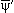
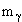
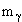
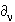

В 1954 году Янг и Миллс решили попробовать получить ρ-мезон также в качестве калибровочного поля. ρ-мезоны были тогда только что открыты, и представлялось, что они могут оказаться искомыми квантами сильного взаимодействия. Подобно рассмотренному случаю с фотоном, напишем лагранжиан для свободного нуклонного поля, где нуклон есть спинор группы изотопических преобразований SU(2) с компонентами +1/2 (протон) и -1/2 (нейтрон):
L0 = |
(3.23) |
Этот лагранжиан инвариантен относительно глобального калибровочного преобразования в изотопическом пространстве
 N(x) =
N(x) = 
 N(x),
N(x),
где  = (
= ( 1,
1,  2,
2,
 3) - три произвольные вещественные фазы.
Потребуем теперь инвариантности лагранжиана
относительно подобного, но локального
калибровочного преобразования в изотопическом
пространстве, когда
3) - три произвольные вещественные фазы.
Потребуем теперь инвариантности лагранжиана
относительно подобного, но локального
калибровочного преобразования в изотопическом
пространстве, когда  является функцией x:
является функцией x:
|
(3.24) |
Но, как и в предыдущем случае, L0 неинвариантен относительно подобного локального калибровочного преобразования:
L'0 = N(x) |
(3.25) |
Для того, чтобы убрать член, нарушающий
калибровочную инвариантность, введем изотриплет
векторных полей  с калибровочным преобразованием
с калибровочным преобразованием
|
(3.26) |
где U = . Взаимодействие этого изовекторного поля с нуклоном зададим лагранжианом
 N(x)
N(x)


 N(x),
N(x),
где - константа связи или константа
взаимодействия нуклонов с  -мезонами.
Массу этого поля мы ввести не можем, поскольку
очевидным образом массовый член в лагранжиане 
-мезонами.
Массу этого поля мы ввести не можем, поскольку
очевидным образом массовый член в лагранжиане  неинвариантен относительно выбранного
калибровочного преобразования для поля
неинвариантен относительно выбранного
калибровочного преобразования для поля  . Запишем окончательное выражение
для лагранжиана, инвариантного относительно
локальных калибровочных преобразований
неабелевой группы SU(2)
. Запишем окончательное выражение
для лагранжиана, инвариантного относительно
локальных калибровочных преобразований
неабелевой группы SU(2)
L = |
(3.27) |
где 
 - свободное безмассовое ρ-мезонное
поле. Оно инвариантно относительно
калибровочных преобразований U
- свободное безмассовое ρ-мезонное
поле. Оно инвариантно относительно
калибровочных преобразований U
 '
' U =
U = 
 . Подробнее выпишем тензор
свободного ρ-мезонного поля
. Подробнее выпишем тензор
свободного ρ-мезонного поля


 =
=  k
k
 , ([
, ([ i,
i,  j]
= 2iijk
j]
= 2iijk k,
i, j, k = 1, 2, 3):
k,
i, j, k = 1, 2, 3):
= ( - ) - 2iijk |
(3.23) |
или
 = (
= (
 -
-  ) - [
) - [
 ,
,  ]
]
и убедимся, что это выражение ковариантным образом преобразуется при калибровочным преобразовании над полем ρ:
U |
(3.23) |
Окончательно
U |
(3.23) |
Важно отметить здесь
особенность неабелева векторного поля - оно
оказывается самодействующим, т.е. в лагранжиане в
члене (-1/4)| |2 появляются члены не
только билинейные по полю ρ,
как это получалось в случае (абелева)
электромагнитного поля, но и члены 3- и 4- линейные
по полю ρ вида
ρν ρμ ∂νρμ
и .
|2 появляются члены не
только билинейные по полю ρ,
как это получалось в случае (абелева)
электромагнитного поля, но и члены 3- и 4- линейные
по полю ρ вида
ρν ρμ ∂νρμ
и .
Этот формализм был обобщен на SU(3)f,
где был построен лагранжиан, описывающий барионы
октета. Требование локальной калибровочной
инвариантности относительно группы ароматов SU(3)f
приводит к появлению октета безмассовых
векторных мезонов с квантовыми числами
знакомого нам октета мезонов 1-.
К сожалению, на этом пути не удалось
построить теории сильных взаимодействий с
векторными мезонами в качестве квантов сильного
поля. Но был создан формализм, позволивший решить
эту задачу уже не в пространстве ароматов с
группой калибровочной симметрии SU(3)f, а в
пространстве цветов с группой калибровочной
симметрии SU(3)C, где квантами поля оказались
безмассовые векторные бозоны, несущие цвет -
глюоны.